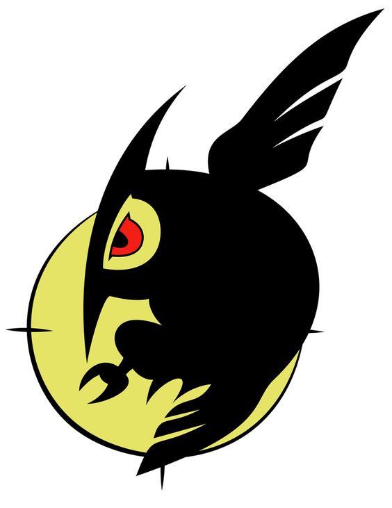

TENTANG

Nightraid adalah organisasi heroik utama dalam serial manga/anime Akame ga Kill. Nightraid merupakan salah satu devisi rahasia Tentara Revolusioner yang bertugas untuk membasmi para penjahat di ibu kota.
Makna Lambang
lambang dari kelompok Nightraid adalah burung hantu dengan bulan dibelakangnya yang melambangkan bahwa Nightraid akan beraksi setiap malam tiba selayaknya burung hantu.
| nama | Naightraid |
|---|---|
| dasar | Tentara Revolusioner |
| komandan | Najenda |